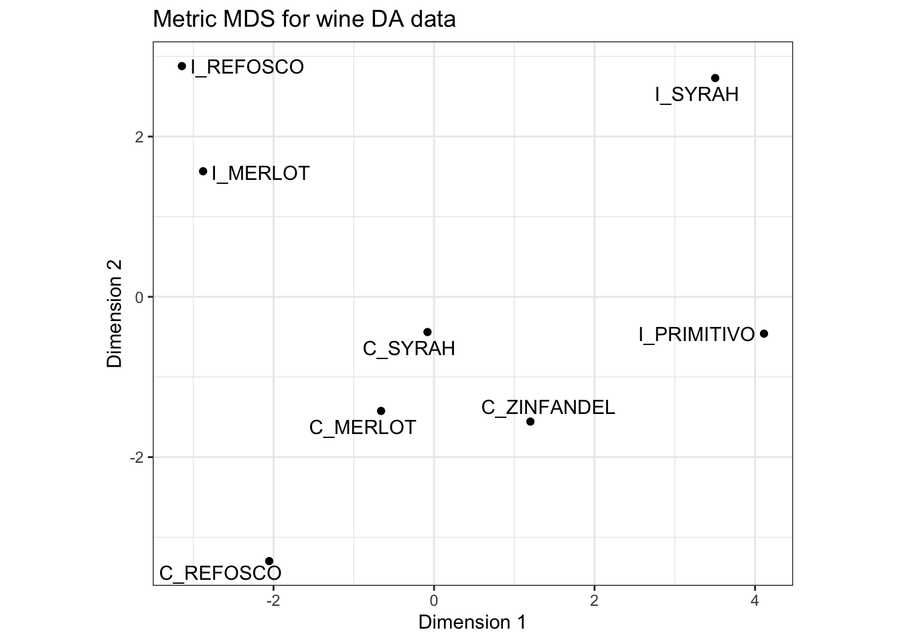
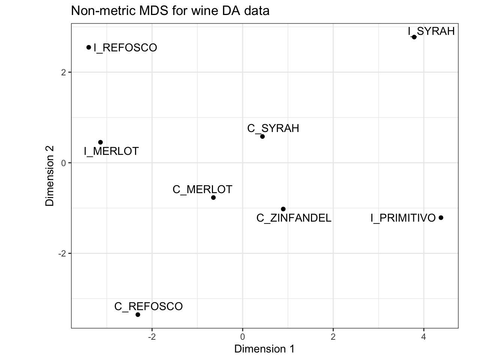
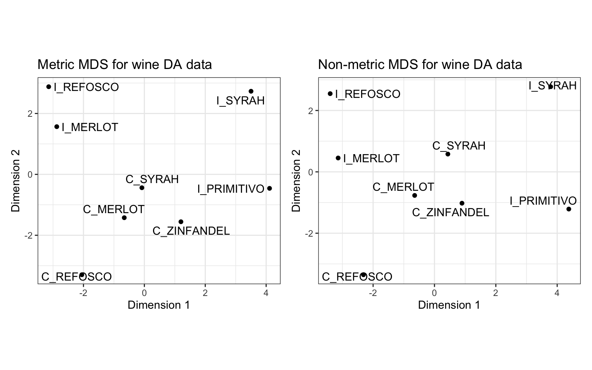

Chapter 8 Multidimensional Scaling (MDS)
Multidimensional scaling (MDS) is a method of representing the distances among a set of items or observations. These distances can come originally from a high-dimensional space (such as the 20-dimensional space that defines our DA data), or from a low-dimensional space. Regardless, the goal of MDS is to find a low-dimensional (2- or 3-dimensional, usually) representation of the items in which the distances among the items is a close approximation of the original distance matrix.
You may notice that MDS operates on the same input data as the clustering techniques we just explored in the previous chapter. In clustering, the goal is not to find a metric or spatial arrangement of objects, but instead to determine some smaller number of clusters or groups that summarize or explain the observed distances among our samples. In MDS, the goal is to provide a visual and spatial representation of the distances.
In the R Opus, HGH applied MDS to the DA data. We’ll explore the same approach once we review the key concept of metric and non-metric MDS.
8.1 Metric vs non-metric
Without going into details, MDS comes in two “flavors”: metric and non-metric. In metric MDS, the distances among objects are taken as “metric” or measurement data: the units themselves are meaningful (another way of saying this is that they are interval or ratio data). In this case, the underlying algorithm for MDS is very similar to PCA, in which an eigendecomposition provides the optimal solution for finding a low-dimensional representation that explains the majority of the variations in distances among samples. Most sensory data is suitable for metric MDS, and in fact the DISTATIS method we will use next is predicated on a proof that distances even among sorting groups are metric (specifically, Euclidean).
For non-metric MDS, the assumption of the distances being meaningful metrics is relaxed; rather, we assume that the provided distances are only meaningful insofar as they represent ranks (they are ordinal data). In this case, non-metric MDS uses a gradient-descent approach to find an approximation by extracting orthogonal dimensions while minimizing a criterion called \(STRESS\). Typically, we won’t have to concern ourselves too much with non-metric MDS, but it could be useful when examining results from, for example, flash profiling (in which samples are ranked but not rated).
8.2 Metric MDS
As usual, we begin by loading our required packages and the data.
library(tidyverse)
library(here)
descriptive_data <-
read_csv(here("data/torriDAFinal.csv")) %>%
# We'll make some factors as usual
mutate(across(1:3, ~as.factor(.)))
descriptive_means <-
descriptive_data %>%
# Get the means for each wine and descriptor
group_by(ProductName) %>%
summarize(across(where(is.numeric), ~mean(.))) %>%
# Scale the data to unit variance
mutate(across(where(is.numeric), ~(. - mean(.)) / sd(.)))Note that as in the previous chapter, HGH scales (normalizes) the data to \(\bar{x}=0\) and \(s=1\), which is a choice rather than a necessity for these methods. We will follow for consistency.
We then need to get the distances among all of our observations.
descriptive_distances <-
descriptive_means %>%
# get the rownames as we go back to older functions
column_to_rownames("ProductName") %>%
dist(method = "euclidean")The cmdscale() function in the base R stats package will do metric MDS for us.
metric_mds <-
descriptive_distances %>%
# `k` defines the # of dimensions to extract, `eig` returns the eigenvalues
# for the spectral (eigen)decomposition
cmdscale(k = 2, eig = TRUE)
metric_mds## $points
## [,1] [,2]
## C_MERLOT -0.66017528 -1.4236819
## C_REFOSCO -2.05394351 -3.2971758
## C_SYRAH -0.08165706 -0.4392567
## C_ZINFANDEL 1.20071498 -1.5563951
## I_MERLOT -2.87771919 1.5668345
## I_PRIMITIVO 4.11149279 -0.4593610
## I_REFOSCO -3.14226246 2.8789771
## I_SYRAH 3.50354973 2.7300588
##
## $eig
## [1] 5.343721e+01 3.392126e+01 1.755089e+01 1.363281e+01 1.225350e+01
## [6] 7.141861e+00 2.062458e+00 1.796329e-15
##
## $x
## NULL
##
## $ac
## [1] 0
##
## $GOF
## [1] 0.6239891 0.6239891At this point you are familiar with our plot and wrangle approach - we’re going to get that $points table and pipe it into ggplot2 to make a nicer looking plot.
p_metric <-
metric_mds$points %>%
as_tibble(rownames = "sample") %>%
ggplot(aes(x = V1, y = V2)) +
geom_point() +
ggrepel::geom_text_repel(aes(label = sample)) +
labs(x = "Dimension 1", y = "Dimension 2",
title = "Metric MDS for wine DA data") +
coord_fixed() +
theme_bw()## Warning: The `x` argument of `as_tibble.matrix()` must have unique column names if
## `.name_repair` is omitted as of tibble 2.0.0.
## ℹ Using compatibility `.name_repair`.
## This warning is displayed once every 8 hours.
## Call `lifecycle::last_lifecycle_warnings()` to see where this warning was
## generated.
We can also examine a scree-plot of the eigenvalues to get a (qualitative) view of this solution.
metric_mds$eig %>%
as_tibble() %>%
mutate(dim = str_c("Dimension ", row_number()),
value = value / sum(value)) %>%
ggplot(aes(x = dim, y = value)) +
geom_point() +
geom_line(aes(group = 1)) +
theme_bw() +
labs(x = NULL, y = NULL,
title = "Scree plot for metric MDS")We can see that, arguably, a 2-dimensional solution is not great for capturing the distances among these samples. See that bend after the 3rd dimension? That’s where we’d often want to put a cut. But this is a little academic - in practice we often only look at the first dimensions.
Let’s compare the distances from our MDS solution to the actual distances:
## C_MERLOT C_REFOSCO C_SYRAH C_ZINFANDEL I_MERLOT I_PRIMITIVO
## C_REFOSCO 5.083950
## C_SYRAH 4.525147 5.472269
## C_ZINFANDEL 3.909011 5.856348 4.817566
## I_MERLOT 4.503404 6.405151 6.153529 6.522035
## I_PRIMITIVO 6.129930 7.853063 5.998705 5.543431 7.842528
## I_REFOSCO 6.272963 6.992652 5.408757 6.917554 4.452965 8.514098
## I_SYRAH 6.911105 8.427799 6.359281 6.170264 7.546229 5.747512
## I_REFOSCO
## C_REFOSCO
## C_SYRAH
## C_ZINFANDEL
## I_MERLOT
## I_PRIMITIVO
## I_REFOSCO
## I_SYRAH 7.537424## C_MERLOT C_REFOSCO C_SYRAH C_ZINFANDEL I_MERLOT I_PRIMITIVO
## C_REFOSCO 2.335074
## C_SYRAH 1.141830 3.472408
## C_ZINFANDEL 1.865617 3.690951 1.700728
## I_MERLOT 3.722995 4.933275 3.441274 5.136944
## I_PRIMITIVO 4.868134 6.787179 4.193198 3.110645 7.276988
## I_REFOSCO 4.967256 6.271308 4.514198 6.207574 1.338544 7.985078
## I_SYRAH 5.881341 8.198371 4.785214 4.865875 6.486423 3.246844
## I_REFOSCO
## C_REFOSCO
## C_SYRAH
## C_ZINFANDEL
## I_MERLOT
## I_PRIMITIVO
## I_REFOSCO
## I_SYRAH 6.647480Here we can see that the distances are indeed only approximate (and not that good an approximation).
Would this get better if we went up to 3 dimensions? We can answer that pretty easily:
## C_MERLOT C_REFOSCO C_SYRAH C_ZINFANDEL I_MERLOT I_PRIMITIVO
## C_REFOSCO 3.882087
## C_SYRAH 3.867494 3.522813
## C_ZINFANDEL 2.323006 4.070842 2.869323
## I_MERLOT 3.775222 6.182909 5.523805 5.516157
## I_PRIMITIVO 4.910980 7.217195 5.183820 3.196724 7.387510
## I_REFOSCO 5.696284 6.279119 4.604395 6.364382 3.667013 8.267098
## I_SYRAH 6.453639 8.210405 4.896535 5.029587 7.269797 3.818459
## I_REFOSCO
## C_REFOSCO
## C_SYRAH
## C_ZINFANDEL
## I_MERLOT
## I_PRIMITIVO
## I_REFOSCO
## I_SYRAH 6.648776It does look like we’re getting closer to the original distances as we go up in dimensionality - the algorithm is able to find “space” to place the points further apart.
Let’s examine one more thing that will lead us to non-metric MDS: does our 2-dimensional MDS solution capture the correct rank order of distances? In other words, is each pairwise distance in the MDS approximation in the same order as it would be in the actual distance matrix?
# I am getting sick of manually tidying distance matrices, so we're going to
# enlist the `widyr` package to automate this.
library(widyr)
# Of course this creates a new set of needs, including getting our data into a
# tidy format to start with
tidy_descriptive_distances <-
descriptive_means %>%
pivot_longer(-ProductName,
names_to = "descriptor",
values_to = "rating") %>%
arrange(ProductName) %>%
# The distance between `ProductName`, based on `descriptor`, with values
# stored in `rating`
pairwise_dist(item = ProductName, feature = descriptor, value = rating,
upper = FALSE, method = "euclidean")
# We'll do the same thing with our MDS results
tidy_mds_distances <-
metric_mds$points %>%
as_tibble(rownames = "product") %>%
arrange(product) %>%
pivot_longer(-product) %>%
pairwise_dist(item = product, feature = name, value = value,
upper = FALSE, method = "euclidean")We can now look at the ranks of pairwise distances and see how many are misaligned.
# We will rank the pairwise distances from the original data
tidy_descriptive_distances %>%
unite(item1, item2, col = "items", sep = " <--> ") %>%
transmute(observed_rank = items,
distance_rank = dense_rank(distance)) %>%
arrange(distance_rank) %>%
# And now we'll line this up with the MDS results
left_join(
tidy_mds_distances %>%
unite(item1, item2, col = "items", sep = " <--> ") %>%
transmute(mds_rank = items,
distance_rank = dense_rank(distance)) %>%
arrange(distance_rank),
# This is the line that lines them up (`by = `)
by = "distance_rank"
) %>%
# And finally we'll check which are the same
mutate(match = observed_rank == mds_rank) %>%
count(match)## # A tibble: 2 × 2
## match n
## <lgl> <int>
## 1 FALSE 21
## 2 TRUE 7That’s actually very bad! We see only 1/4 of the original distances captured by the 2-dimensional MDS solution. Yikes.
Let’s take a look and see if a non-metric MDS can do better.
8.3 Non-metric MDS
In non-metric MDS, we assume that the observed distances are non-metric: they only represent an ordination of the distances among the items. An example would be, in our actual data, that the observed distances represent estimates or opinions from our panelists:
## # A tibble: 28 × 3
## item1 item2 distance
## <fct> <fct> <dbl>
## 1 C_MERLOT C_ZINFANDEL 3.91
## 2 I_MERLOT I_REFOSCO 4.45
## 3 C_MERLOT I_MERLOT 4.50
## 4 C_MERLOT C_SYRAH 4.53
## 5 C_SYRAH C_ZINFANDEL 4.82
## 6 C_MERLOT C_REFOSCO 5.08
## 7 C_SYRAH I_REFOSCO 5.41
## 8 C_REFOSCO C_SYRAH 5.47
## 9 C_ZINFANDEL I_PRIMITIVO 5.54
## 10 I_PRIMITIVO I_SYRAH 5.75
## # ℹ 18 more rowsThe closest samples are C_MERLOT and C_ZINFANDEL, and the second closest are I_MERLOT and I_REFOSCO. If our distances are merely ordinations, we can only say that–we can’t compare the actual “differences of distances” as we could if these were metric. In the metric case, we could subtract the distance between C_MERLOT and C_ZINFANDEL and I_MERLOT and I_REFOSCO (\(\approx4.5-3.9\approx0.6\)) and say that the difference between those distances is larger than that between the second and third smallest distances (I_MERLOT and I_REFOSCO vs C_MERLOT and I_MERLOT, which is \(\approx4.5-4.45\approx0\)). So we could say something like “the difference between the two closest pairs of samples is quite large, but the difference between the next two closest is approximately the same”. We can’t do that with an ordination, because we only know the relative ranks:
tidy_descriptive_distances %>%
transmute(item1, item2,
distance_rank = dense_rank(distance)) %>%
arrange(distance_rank)## # A tibble: 28 × 3
## item1 item2 distance_rank
## <fct> <fct> <int>
## 1 C_MERLOT C_ZINFANDEL 1
## 2 I_MERLOT I_REFOSCO 2
## 3 C_MERLOT I_MERLOT 3
## 4 C_MERLOT C_SYRAH 4
## 5 C_SYRAH C_ZINFANDEL 5
## 6 C_MERLOT C_REFOSCO 6
## 7 C_SYRAH I_REFOSCO 7
## 8 C_REFOSCO C_SYRAH 8
## 9 C_ZINFANDEL I_PRIMITIVO 9
## 10 I_PRIMITIVO I_SYRAH 10
## # ℹ 18 more rowsWe can no longer know if the difference between 1st and 2nd place (so to speak, of distance_rank) is the same as the difference between 2nd and 3rd place, and so on. We only know that C_MERLOT and C_ZINFANDEL are closer than I_MERLOT and I_REFOSCO, and so on.
OK, with that out of the way, let’s take a look at non-metric MDS. For this, we will use the MASS package. MASS is bundled with R, but is not loaded by default. It contains many useful core functions for statistics, especially non-linear and multivariate stats. You can learn more about it at the authors’ website.
library(MASS)
# the `isoMDS()` function will be what we use.
nonmetric_mds <-
isoMDS(d = descriptive_distances, k = 2)## initial value 9.444389
## iter 5 value 7.065995
## iter 10 value 6.940918
## final value 6.928604
## convergedAs mentioned, non-metric MDS is an iterative optimization problem. We are told that the solution has “converged” because the \(STRESS\) value is no longer going down with subsequent iterations. Let’s look at our results.
p_nonmetric <-
nonmetric_mds$points %>%
as_tibble(rownames = "sample") %>%
ggplot(aes(x = V1, y = V2)) +
geom_point() +
ggrepel::geom_text_repel(aes(label = sample)) +
labs(x = "Dimension 1", y = "Dimension 2",
title = "Non-metric MDS for wine DA data") +
coord_fixed() +
theme_bw()
p_nonmetric
I’d like to compare our metric and non-metric configurations. To do so we can use the patchwork package, as we have before.

Note that the configurations are quite similar, but with some notable sifts (e.g., the positioning of I_MERLOT pops out). This makes sense: if you read the ?isoMDS documentation, you’ll see that the initial configuration for the non-metric MDS is the metric MDS solution, so this approach starts with our metric MDS configuration and improves on it.
Let’s see if we’ve improved the representation of our relative ranks for distances:
tidy_nonmetric_mds_distances <-
nonmetric_mds$points %>%
as_tibble(rownames = "product") %>%
arrange(product) %>%
pivot_longer(-product) %>%
pairwise_dist(item = product, feature = name, value = value,
upper = FALSE, method = "euclidean")
tidy_descriptive_distances %>%
unite(item1, item2, col = "items", sep = " <--> ") %>%
transmute(observed_rank = items,
distance_rank = dense_rank(distance)) %>%
arrange(distance_rank) %>%
# And now we'll line this up with the MDS results
left_join(
tidy_nonmetric_mds_distances %>%
unite(item1, item2, col = "items", sep = " <--> ") %>%
transmute(mds_rank = items,
distance_rank = dense_rank(distance)) %>%
arrange(distance_rank),
# This is the line that lines them up (`by = `)
by = "distance_rank"
) %>%
# And finally we'll check which are the same
mutate(match = observed_rank == mds_rank) %>%
count(match)## # A tibble: 2 × 2
## match n
## <lgl> <int>
## 1 FALSE 25
## 2 TRUE 3It certainly doesn’t seem like we have! Yikes! I think a higher-dimensional solution is certainly required to adequately capture the configuration of these products.
8.4 Wrap up
To be fair, saying “Yikes!” is probably a little overblown. If we examined the tables above I used to compare the observed and estimated ranks in more detail, we’d see that the variation is quite small, for example, for the non-metric data:
## # A tibble: 28 × 4
## observed_rank distance_rank mds_rank match
## <chr> <int> <chr> <lgl>
## 1 C_MERLOT <--> C_ZINFANDEL 1 C_MERLOT <--> C_ZINFANDEL TRUE
## 2 I_MERLOT <--> I_REFOSCO 2 C_SYRAH <--> C_ZINFANDEL FALSE
## 3 C_MERLOT <--> I_MERLOT 3 C_MERLOT <--> C_SYRAH FALSE
## 4 C_MERLOT <--> C_SYRAH 4 I_MERLOT <--> I_REFOSCO FALSE
## 5 C_SYRAH <--> C_ZINFANDEL 5 C_MERLOT <--> I_MERLOT FALSE
## 6 C_MERLOT <--> C_REFOSCO 6 C_MERLOT <--> C_REFOSCO TRUE
## 7 C_SYRAH <--> I_REFOSCO 7 C_ZINFANDEL <--> I_PRIMITIVO FALSE
## 8 C_REFOSCO <--> C_SYRAH 8 C_SYRAH <--> I_MERLOT FALSE
## 9 C_ZINFANDEL <--> I_PRIMITIVO 9 C_REFOSCO <--> I_MERLOT FALSE
## 10 I_PRIMITIVO <--> I_SYRAH 10 C_REFOSCO <--> C_ZINFANDEL FALSE
## # ℹ 18 more rowsAs we can see, while indeed there are rank reversals, they are relatively minor: it isn’t like samples that are close in the actual distance matrix are ending up being very far in the non-metric MDS 2-dimensional solution.
8.5 Packages used in this chapter
## R version 4.3.1 (2023-06-16)
## Platform: aarch64-apple-darwin20 (64-bit)
## Running under: macOS Ventura 13.6.1
##
## Matrix products: default
## BLAS: /Library/Frameworks/R.framework/Versions/4.3-arm64/Resources/lib/libRblas.0.dylib
## LAPACK: /Library/Frameworks/R.framework/Versions/4.3-arm64/Resources/lib/libRlapack.dylib; LAPACK version 3.11.0
##
## locale:
## [1] en_US.UTF-8/en_US.UTF-8/en_US.UTF-8/C/en_US.UTF-8/en_US.UTF-8
##
## time zone: America/New_York
## tzcode source: internal
##
## attached base packages:
## [1] stats graphics grDevices utils datasets methods base
##
## other attached packages:
## [1] patchwork_1.1.2 MASS_7.3-60 widyr_0.1.5 here_1.0.1
## [5] lubridate_1.9.2 forcats_1.0.0 stringr_1.5.0 dplyr_1.1.2
## [9] purrr_1.0.1 readr_2.1.4 tidyr_1.3.0 tibble_3.2.1
## [13] ggplot2_3.4.3 tidyverse_2.0.0
##
## loaded via a namespace (and not attached):
## [1] sass_0.4.7 utf8_1.2.3 generics_0.1.3 lattice_0.21-8
## [5] stringi_1.7.12 hms_1.1.3 digest_0.6.33 magrittr_2.0.3
## [9] evaluate_0.21 grid_4.3.1 timechange_0.2.0 bookdown_0.37
## [13] fastmap_1.1.1 plyr_1.8.8 Matrix_1.6-0 rprojroot_2.0.3
## [17] jsonlite_1.8.7 ggrepel_0.9.3 backports_1.4.1 fansi_1.0.4
## [21] scales_1.2.1 jquerylib_0.1.4 cli_3.6.1 rlang_1.1.1
## [25] crayon_1.5.2 bit64_4.0.5 munsell_0.5.0 withr_2.5.0
## [29] cachem_1.0.8 yaml_2.3.7 tools_4.3.1 parallel_4.3.1
## [33] reshape2_1.4.4 tzdb_0.4.0 colorspace_2.1-0 broom_1.0.5
## [37] vctrs_0.6.3 R6_2.5.1 lifecycle_1.0.3 bit_4.0.5
## [41] vroom_1.6.3 pkgconfig_2.0.3 pillar_1.9.0 bslib_0.5.1
## [45] gtable_0.3.4 Rcpp_1.0.11 glue_1.6.2 highr_0.10
## [49] xfun_0.39 tidyselect_1.2.0 rstudioapi_0.15.0 knitr_1.43
## [53] farver_2.1.1 htmltools_0.5.6 labeling_0.4.3 rmarkdown_2.23
## [57] compiler_4.3.1